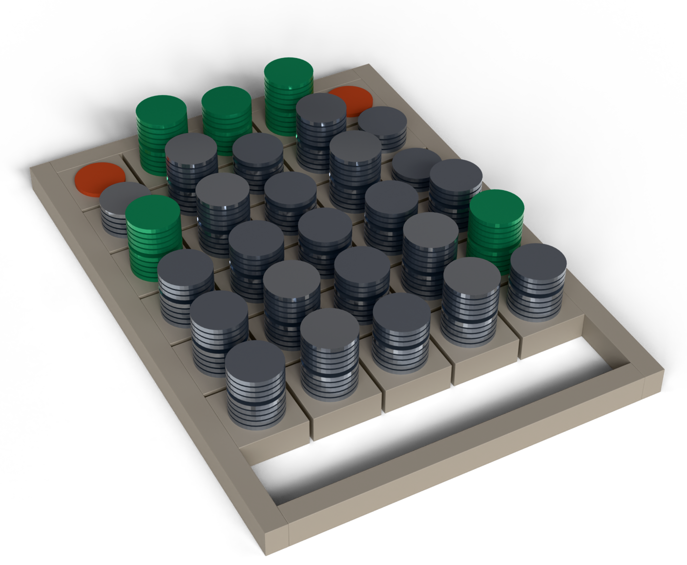

Both figures are true, and they measure different things. Only one counts a file as right when all five fields are right together — and that is the one whose errors reach your review team.
On your records, on your machine. Nothing leaves the network. If nothing comes out cheaper without breaking a file, the report says so.
